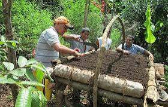
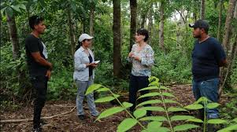
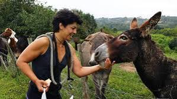

*TURISMO AGROTURISMO*
Se define por su enfoque en la conexion directa con un entorno rurales y agricolas esta practica busca ofrecer a los visitantes la experiencia inversiva de la vida en el campo, permitiendoles participar activamente en la actividad
agricolas y ganaderias.Atravez de la estancia en alojamiento rurales ya la internacion directa con los labores del campo en agroturismo fomentala compresion de las practicas agricolas la promosion de prouctos localesy la contribucion al desarrollo
sostenible de las comunidades rurales.
*CARACTERISTICAS AGROTURISMO*
- Ofrece a los visitantes la oportunidad de alejarse de los entorno urbanos y sumergirse en paisajes naturales las ubicaciones suele encontrarse en zonas rurales ,rodeadas de campos, bosquesy muchos casoscercas en parque naturales.
- Adiferencia de otras formas de turismoel agroturismo anima a los turistas a participar activamente en las actividades agricolas y ganaderas. esto puede incluir la siembra y cosecha de cultivos, la alimentacion y cuidado de animales asi como la produccion de productos locales .
- Los lugares de hospedaje en el agroturismo suelen ser granjas,casas rurales o alojamiento tematico que permitir a los visitantes vivir serca la experiencia rural estos lugares suelen ser acogedores y propocionar un ambientte hogareño a enudo con mobiliario tradicional y decoracion vinculada a la vida en el campo.
- No solo busca entrentener si no tambien educar los visitantes tiene la oportunidad de aprenser solo las practicas agricolas la produccion de alimentos la vida rural y en muchos casos sobre la importancia de la sostenibilidad y la conservacion del medio ambieente una parte integral del agroturismo es la desgustacion de productos locales los turistas pueden disfrutar de alimentos frescos y tradicionales a menudeo deirectamete producido en la finca o en las cercancia.

*ACTIVIDADES DEL AGROTURISMO*
- COSECHA DE CULTIVO: Los visitantes pueden participar en la siembra y cosecha de cultivos experimentados de primera mano el ciclo de vida de las productos agricolas. estas actividades la recolleccion de frutas verduras o icluso la cosecha de cereales dependiendo de la temporada y la region.
- CUIDADO DE ANIMALES: Muchas que participan en el agroturismo tirne animales como vacas,ovejas,cabras,aves de corral,entre otros los turistas pueden involucrarse en la alimentacion cuidado y ordeño de los animales eprendiendo sobre la ganaderia y el manejo animal.
- ELABORACION DE PRODUCTO LOCALES: Algunas experiencias de agroturismo permite visitantes participar en la elaboracion de productos locales esto puede incluir la produccion de queso,mermeladas,pan,miel,o incluso la destilcion de licores, dependiendo de las especialidades de la region.
- OBSERVACION DE AVES Y VIDA SILVESTRE: Dado que muchas ubicaciones de agroturismo estan en entorno naturales los turistas pueden disfrutar de la observacion de aves y la vida silvestre lo que añade un toque de ecoturismo y la experiencia.

*IMPORTANCIA DEL AGROTURISMO*
El agroturismo es impotante por muchas razones ayudar a generar ingresos adicionales para los productores generar ingresos una atmosfera donde las personas pueden aprender sobre la agricultura y formentar una conexion
mas profunda con la fuente de compra de alimentos que beneficie a la comunidad a nivel mas local y no solo corporaciones multinacionales ademas un dia en el campo bajo un cielo aul claro con aire fresco y ejercicio generalmente se considera un buen dia.

GOMEZ GOMEZ CLEYDI Y@RENI
P.T.B EN INFORMATICA
0-06-2024